class: center, middle # EE-362 ELECTROMECHANICAL ENERGY CONVERSION-II # Speed Control Techniques for Induction Machines ## Ozan Keysan [keysan.me](http://keysan.me) Office: C-113 <span class="meta">•</span> Tel: 210 7586 --- ## Full Operating Range of Induction Machines 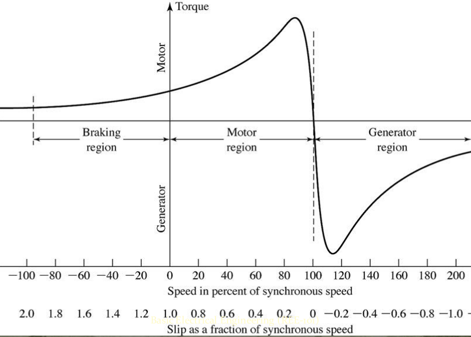 --- # Operation Modes of Induction Motors # 1- Motoring # 2- Generating # 3- Braking (Plugging) --- # Motoring ## Slip: \\(0 < s < 1\\) ## Power Flow: Electrical to Mechanical <img src="./images/ee362/induction_motor_power_flow.png" alt="Drawing" style="width: 800px;"/> --- # Generating ## Slip: \\(s < 0\\) ## Power Flow: Mechanical to Electrical 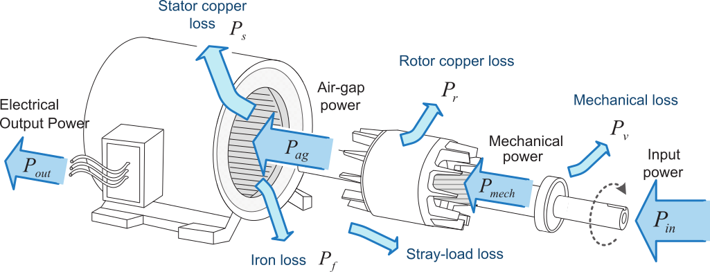 --- # Braking (Plugging) ### Slip: \\(s > 1\\) ## Power Flow: Mechanical+Electrical to Heat <img src="https://3.bp.blogspot.com/-Y_HjqnZLkig/Vs1oeZuSv0I/AAAAAAAAA64/z0xwXGgqfR4/s1600/plugging-on-induction-motor.jpeg" alt="Drawing" style="width: 600px;"/> ### Plugging obtained by interchanging two stator phases --- # Machine Dynamics ## Torque Balance Equation ## \\(T\_{elec} - T\_{load} = J \dfrac{d \omega}{dt} \\) 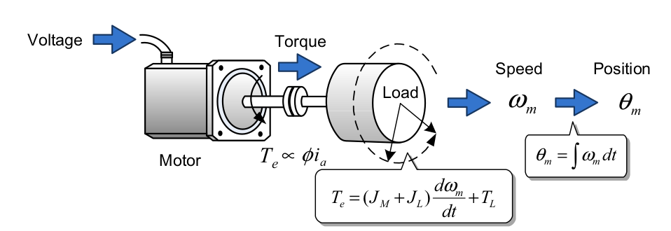 --- ### If there is no difference between the electrical torque and load torque, the machine operates at the steady-state ### (i.e. the intersection point at between the motor torque line and the load torque line). 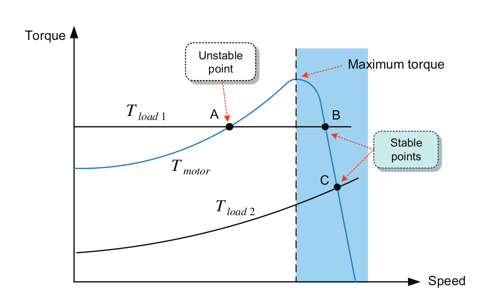 ### but beware of unstable intersection points. --- <!--- # Four-Quadrant Operation <img src="http://lh4.ggpht.com/_X6JnoL0U4BY/S1hWPpFVASI/AAAAAAAAH6g/2f2K5R2I-I0/tmp2B719_thumb1_thumb.png" alt="Drawing" style="width: 800px;"/> --> # Speed Control Problems -- - ## Load constant, speed reference is changed -- - ## You want the speed constant, but load torque is varying -- - ## Both speed reference and load variable -- ## We need to modify machine characteristic --- ### Closed Loop Control of an Electrical Machine 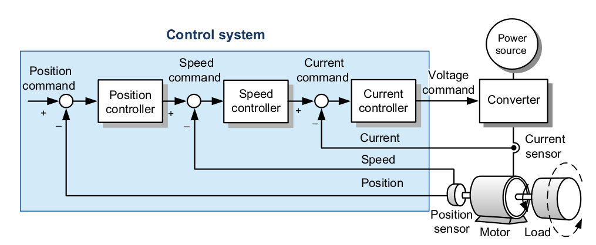 --- ## Speed Control Methods ## Variable Voltage Control: \\(T\_e \propto V^2 \\) ### Control is limited to a small range as Ns is constant 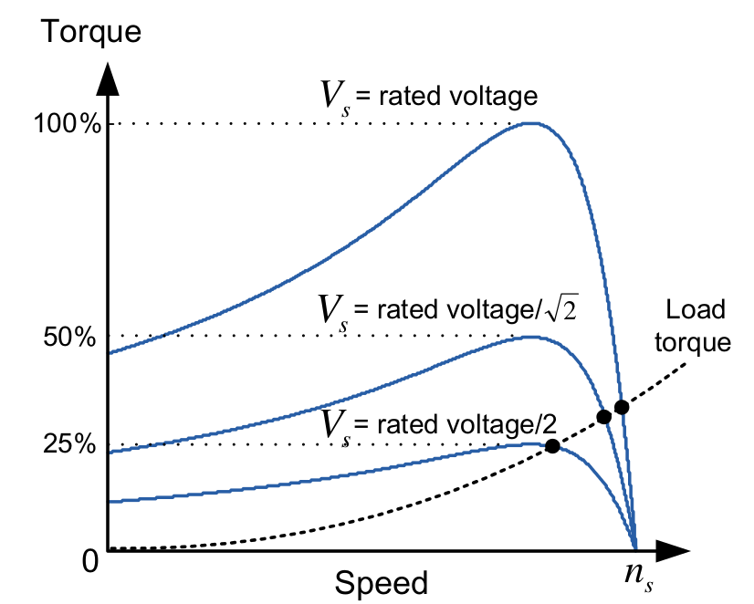 --- ## Speed Control Methods ## Rotor Resistance Control: ### Not very efficient, but can create a large startup torque 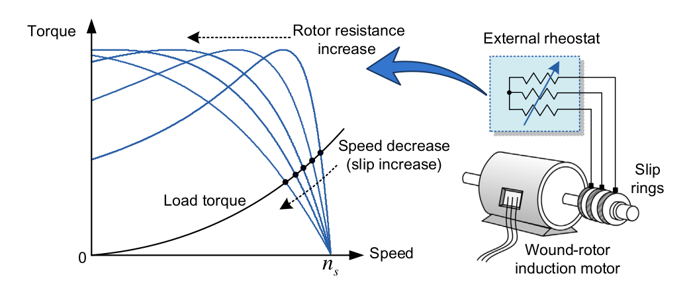 ### Only applicable to wound rotor induction machines --- ## Speed Control Methods ## Variable Stator Voltage Frequency -- #### What happens if we change the synchronous speed by changing the stator voltage frequency? 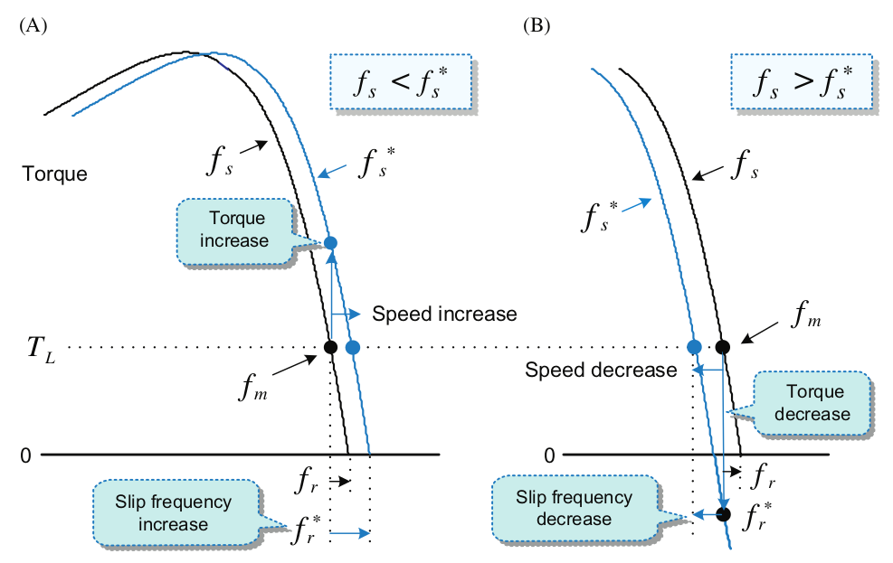 --- # Linear Approximation of Torque ## Accurate torque expression ### Valid for all values of slip ### \\(T\_e = \dfrac{3 V\_{th}^2}{(R\_{th}+\dfrac{r'\_2}{s})^2 + (X\_{th}+X'\_2)^2}\dfrac{r'\_2}{s \omega\_s}\\) ### However, under steady-state conditions, slip is usually very small (<5%) --- # Linear Approximation of Torque ## \\(s < 0.05\\) ## \\(\dfrac{r\_2'}{s} >> R\_{th}, X\_{th}, X\_{2}'\\) ### Torque equation becomes -- ### \\(T\_{e} \approx \dfrac{3 V\_{th}^2 s}{r'\_2 \omega\_s}\\) --- # Linear Approximation of Torque ## \\(T\_{e} \approx \dfrac{3 V\_{th}^2 s}{r'\_2 \omega\_s}\\) ## \\(T\_{e} \approx k s\\) ## (only valid for small values of s) --- ### Variable Stator Voltage Frequency ### What happens if we reduce f, with constant V? -- ## \\(E = 4.44 f\_s N\_s \Phi\\) ## Motor core starts saturating which is not desirable! --- ## Variable Stator Voltage Frequency ### Alternatively, if the frequency is increased by keeping the voltage constant, motor cannot produce enough torque. 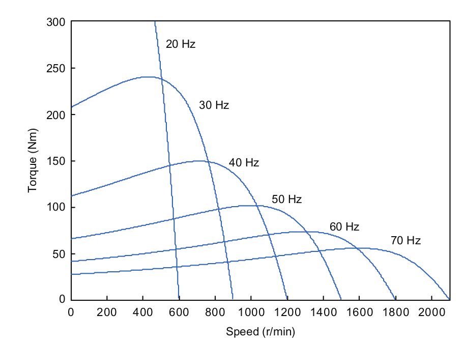 #### Reduction of torque under constant voltage with increasing frequency --- ## How can we keep \\(\Phi\\) constant? --- ## Constant V/f Operation (or Constant Flux) ### Change the voltage with stator frequency to keep the flux constant 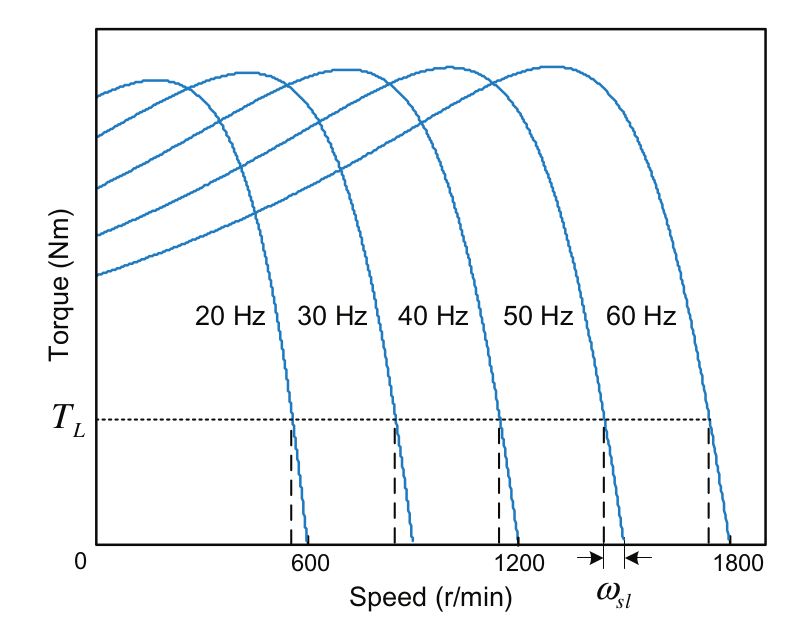 ### Stator voltage is varied with frequency to eliminate torque reduction --- ## Constant V/f Operation (or Constant Flux) ### Use a Variable Voltage-Frequency Drive (VFD) 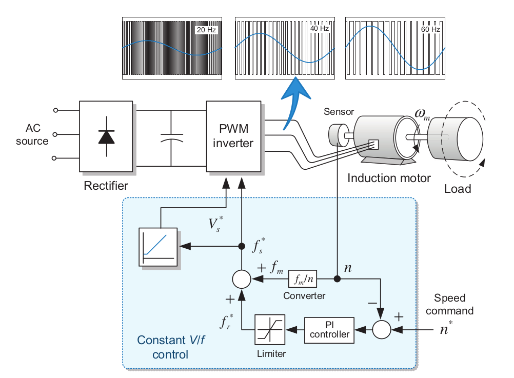 --- ## Constant V/f Operation (or Constant Flux) ### Use a Variable Voltage-Frequency Drive (VFD) 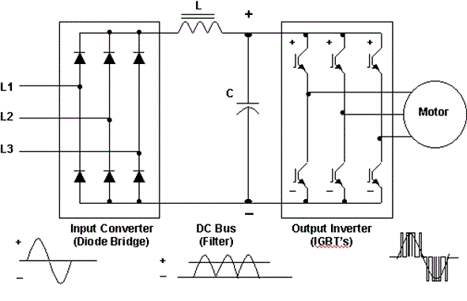 #### For curious students: [Variable Frequency Drive](https://www.electrical4u.com/variable-frequency-drive/), [What is VFD?](https://www.vfds.com/blog/what-is-a-vfd), [Basics of the Inverter](https://www.youtube.com/watch?v=6bPhAHe-37U), [How Inverters Work?](https://www.youtube.com/watch?v=ln9VZIL8rVs) --- ## Constant V/f Operation (or Constant Flux) ### Constant torque can be achieved during acceleration 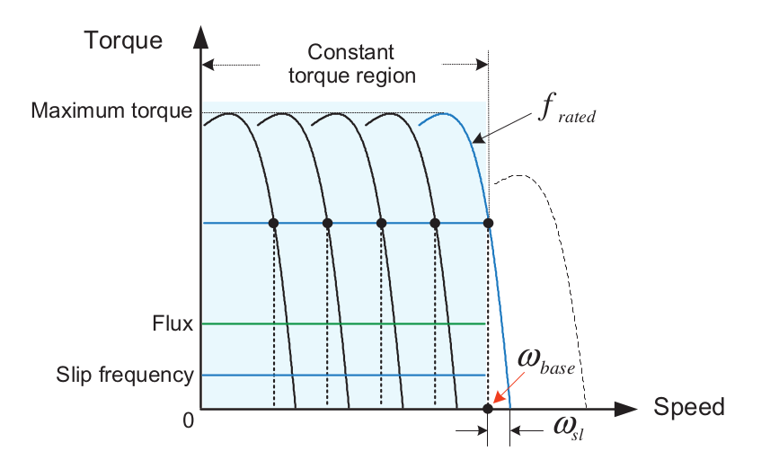 #### If we set the slip to the point where max torque is produced (\\(s\_{max-T}\\)), the machine can be accelerated quickly. --- <img src="https://i.redd.it/a3ar6o7rlzyz.jpg" alt="Drawing" style="width: 550px;"/> #### [Tesla Insane Mode](https://youtu.be/LpaLgF1uLB8?t=38s), [Tesla Insane Mode- Slow Motion](https://youtu.be/Y8-S7FghyEA?t=27s), [Tesla Model S P100D](https://www.youtube.com/watch?v=I5mZ1IK7SuU), [Tesla Model S Plaid](https://www.youtube.com/watch?v=ODxd_acxsIM) --- <img src="https://cdn.shopify.com/s/files/1/0196/5170/files/Tesla-Model-S-Plaid-vs-Porsche-Taycan-Turbo-S-vs-Lucid-Air-Grand-Touring.jpg" alt="Drawing" style="width: 550px;"/> #### [Tesla Insane Mode](https://youtu.be/LpaLgF1uLB8?t=38s), [Tesla Insane Mode- Slow Motion](https://youtu.be/Y8-S7FghyEA?t=27s), [Tesla Model S P100D](https://www.youtube.com/watch?v=I5mZ1IK7SuU), [Tesla Model S Plaid](https://www.youtube.com/watch?v=ODxd_acxsIM) --- # Flux Weakening Range ### Voltage cannot be increased beyond the rated voltage ### If the torque is kept constant at high speeds, power limit will be exceeded. 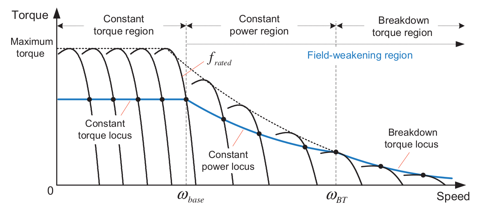 --- # Flux Weakening Range ### Operation of an induction machine is determined by: phase voltage, magnetic flux, phase current, cooling capability, mechanical constraints 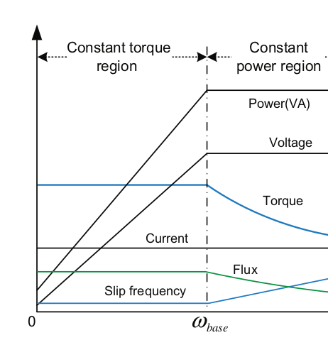 <!--- # Rotor Resistance Control ## For Wound Rotor Induction Motors <img src="http://www.ibiblio.org/kuphaldt/electricCircuits/AC/02512.png" alt="Drawing" style="width: 700px;"/> ### Rotor Currents are dissipated as heat # Slip Energy Recovery ## Use a Converter to Increase Efficiency <img src="http://www.ibiblio.org/kuphaldt/electricCircuits/AC/02513.png" alt="Drawing" style="width: 700px;"/> # Doubly-fed Induction Generators([DFIG](http://en.wikipedia.org/wiki/Doubly_fed_electric_machine)) <img src="https://api.intechopen.com/media/chapter/17118/media/image3.png" alt="Drawing" style="width: 700px;"/> # Doubly-fed Induction Generators ### Used in most wind turbines <img src="http://www.thewindpower.net/images/image9167.jpg" alt="Drawing" style="width: 700px;"/> # Doubly-fed Induction Generators ### Used in most wind turbines <img src="http://cached.imagescaler.hbpl.co.uk/resize/scaleWidth/460/offlinehbpl.hbpl.co.uk/news/OPW/96445B7D-9B5F-8A1A-10E05B9E7AFD97F7.jpg" alt="Drawing" style="width: 700px;"/> # Doubly-fed Induction Generators ### Used in most wind turbines <img src="http://cached.imagescaler.hbpl.co.uk/resize/scaleWidth/460/offlinehbpl.hbpl.co.uk/news/MPW/0C9FABCC-CACF-B0B0-F1CD48C63AD088C7.jpg" alt="Drawing" style="width: 700px;"/> # Doubly-fed Induction Generators <img src="http://www.eurotrib.com/files/3/090312_nacelle_C_Power.jpg" alt="Drawing" style="width: 500px;"/> ## RePower 6 MW, [Bard Turbines](http://en.wikipedia.org/wiki/BARD_Offshore_1) # Doubly-fed Induction Generators <img src="http://notrickszone.com/wp-content/uploads/2014/09/Bard-Offshore-windpark.jpg" alt="Drawing" style="width: 600px;"/> ## [Bard Offshore Wind Farm](http://www.bard-offshore.de/en/concepts/wecs/nacelle.html) # Doubly-fed Induction Generators <img src="https://c2.staticflickr.com/4/3468/3400738277_70cde9f67c_b.jpg" alt="Drawing" style="width: 600px;"/> ## [Bard Offshore Wind Farm](http://www.bard-offshore.de/en/concepts/wecs/nacelle.html) --> --- ## Solved problems ### Yıldırım Üçtug Solved Problems, Feb 2004, CH2 - Q4: -- ### The following observations are made on a 3-phase, 50-Hz, Y-connected, 380 V rms line-to-line induction motor with negligible stator winding resistance and core loss. -- ### i) At no-load the motor is rotating at 745 rpm. -- ### ii) The stator can not be started with a heavy load, but it only starts when the load torque is reduced to 236 Nm -- ### iii) When the motor is running at rated speed, the load is gradually increased and it is found that the rotor speed reduced down to 600 rpm, but after it decelerates and stops. --- # CH2 - Q4: ### The following observations are made on a 3-phase, 50-Hz, Y-connected, 380 V rms line-to-line induction motor with negligible stator winding resistance and core loss. ### i) At no-load the motor is rotating at 745 rpm. ### ii) Starting Torque = 236 Nm ### iii) Maximum torque at 600 rpm. -- ## b-c) Calculate the referred rotor resistance and total leakage reactance (stator+rotor)? --- # CH2 - Q4: ### The following observations are made on a 3-phase, 50-Hz, Y-connected, 380 V rms line-to-line induction motor with negligible stator winding resistance and core loss. ### i) At no-load the motor is rotating at 745 rpm. ### ii) Starting Torque = 236 Nm ### iii) Maximum torque at 600 rpm. ### d) If the rotational loss is 1518 W, find the air-gap power, rotor copper loss, internal mechanical power and the net output power when the rotor is rotating at 712.5 rpm --- # CH2 - Q4: ### The following observations are made on a 3-phase, 50-Hz, Y-connected, 380 V rms line-to-line induction motor with negligible stator winding resistance and core loss. ### i) At no-load the motor is rotating at 745 rpm. ### ii) Starting Torque = 236 Nm ### iii) Maximum torque at 600 rpm. ### e) Calculate the efficiency at 712.5 rpm --- # Solutions ## [Download Solutions](../files/362_recitation.pdf) --- # 2016-MT2 -- ### Induction motors are commonly used in tower cranes with variable voltage and frequency drives. -- ### In this problem, ignore the parallel branch of the induction motor, the friction and windage losses. ### a) Assume that, the crane operator is lifting(moving up) a mass at constant speed. --- # 2016-MT2 ## c) Assume you have a 400V (l-l) Y-connected, 16kW, 3-phase, 6-pole squirrel-cage induction machine connected to a variable voltage variable frequency drive. The referred rotor resistance (r2') is 0.5 Ω. ## The crane operator lifts a mass which exerts 91 Nm of torque in the induction machine. Calculate the rotor speed in rpm, if the induction machine is supplied with 50 Hz, 400 V(l-l) voltage. --- # 2016-MT2 ## d) Now, the operator would like to increase the speed of the load using the motor controller, which responds by suddenly changing the applied frequency to 60 Hz under constant V/f mode of operation, calculate the speed of the rotor once the system reaches the steady-state under 60 Hz excitation. --- # 2016-MT2 ## e) In a graph, sketch the the torque characteristics of the machine (torque vs rotor speed in rpm) in part (c) and label the operating point with label A. Then label the steady state operating point of part (d) with label B. Describe in detail how the machine moves from the state in point A to the state in point B. --- # 2016-MT2 ## f) For the transient period from point A to point B, sketch the following. ## i) Rotational speed vs time ## ii) Electromagnetic torque vs time ## iii) Gross mechanical power vs time. --- # 2016-MT2 ## g) (Bonus) If the crane is lifting a 1000 kg load, and the motor is delivering rated power of 16 kW. What is the linear speed of the load in m/s? --- # 2016-MT2 ## [Download Solutions](../files/ee362_MT2_2016_solutions.pdf) ---